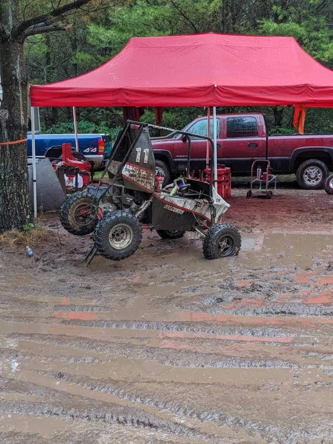
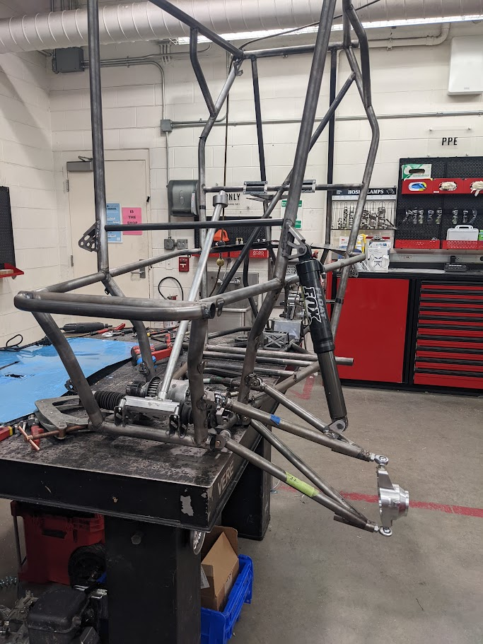
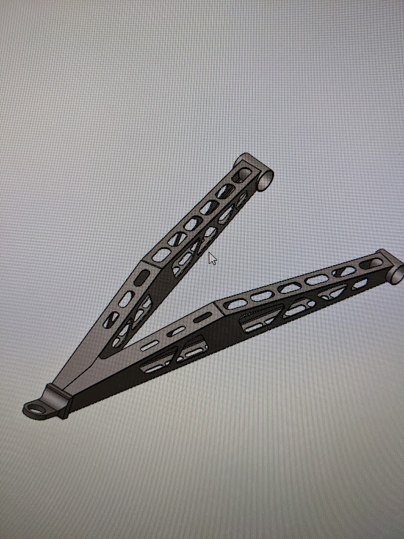
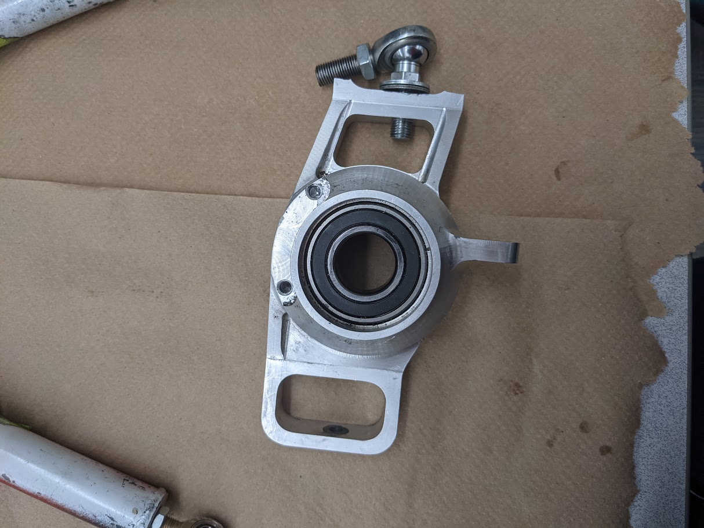
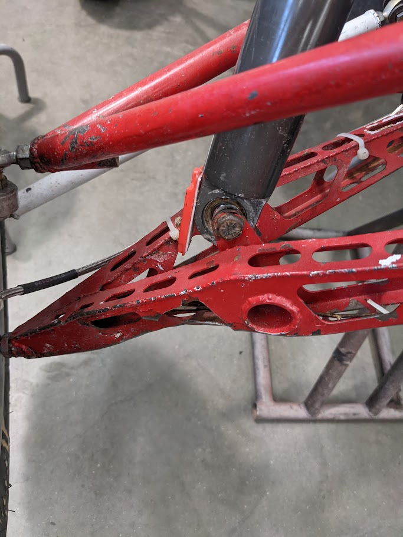
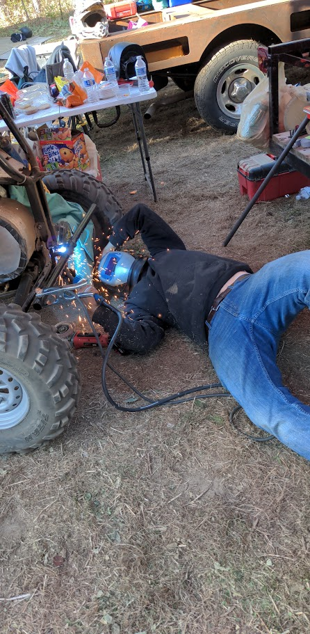
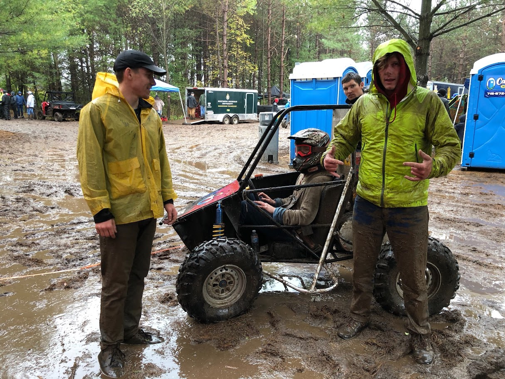

VEHICLE TESTING • FEA • DESIGN • FABRICATION
Baja SAE Lower
Control Arm Redesign
Using measured vehicle loads, structural analysis, fabrication, and real-world testing to develop a lightweight welded sheet-metal suspension component for an off-road race vehicle.

Baja SAE places lightweight student-designed vehicles in rough off-road environments where suspension components must survive impacts, jumps, mud, rocks, and highly variable loading.
Make it lighter without making it fragile.
The lower control arm is one of the primary structural links between the chassis and upright, making it a natural target for mass reduction but a poor place to sacrifice durability.
Baja suspension hardware sees far more than clean, predictable loading. Jumps, wheel impacts, rocks, terrain irregularities, and driver inputs create transient load cases that are difficult to represent perfectly in a simplified structural model.
The design therefore needed to balance mass, strength, buckling resistance, manufacturability, impact tolerance, and the reality of student-built off-road racing.

Suspension and chassis integration during vehicle development.
Measure first. Model second.
Rather than relying only on assumed suspension loads, we instrumented the vehicle with strain gauges and accelerometers and collected data while driving over representative obstacles. Those measurements were used to estimate structural loads for subsequent analysis.
Vehicle Testing
Drive the vehicle over representative off-road obstacles.
Instrumentation
Measure strain and acceleration during real vehicle events.
Load Development
Convert measured response into suspension loading estimates.
FEA
Use the resulting loads to guide structural redesign.

SolidWorks model of the redesigned lower control arm.
From conventional structure to lightweight sheet metal.
I used the developed suspension loads in iterative SolidWorks FEA to redesign the lower control arm as a welded sheet-metal box structure.
The geometry was repeatedly adjusted to remove unnecessary material while maintaining load paths, local stiffness, buckling resistance, and practical weldability.
Large lightening features reduced mass while the folded and welded architecture provided the section depth needed to carry suspension loads efficiently.
A suspension component never works alone.
The control arm geometry had to work with the upright, rod-end interfaces, shock location, steering geometry, chassis packaging, and the practical constraints of fabricating and assembling the complete suspension.
Baja was valuable because every design decision eventually had to fit into a real vehicle rather than remaining an isolated CAD model.

Machined upright used as part of the vehicle's suspension assembly.
Eventually, the vehicle has to leave the ground.
Vehicle testing and competition exposed the suspension to load cases that are difficult to recreate completely in a static model. The slow-motion footage below shows the kind of dynamic environment the suspension was designed to survive.
Slow-motion suspension response during a vehicle jump.
The loads you remember are rarely the clean ones.
Off-road vehicles experience awkward events that do not fit neatly into nominal load cases. Wheel impacts, uneven landings, local strikes, and large transient accelerations can dominate real-world durability.

Simulation is a design input, not an absolute answer.
FEA was essential for understanding the structure and removing unnecessary mass, but Baja reinforced that a successful design also has to tolerate imperfect terrain, manufacturing variation, localized damage, and transient events that are difficult to capture in a clean model.
The project changed the way I think about optimization: minimizing predicted stress or mass is not enough if the component becomes too sensitive to the real environment in which it has to operate.
Design work does not stop when the event starts.
Baja competitions were full-vehicle engineering exercises. Fabrication, repair, troubleshooting, and design judgment continued in the field when the car broke, conditions changed, or a problem appeared that had never shown up in the shop.

